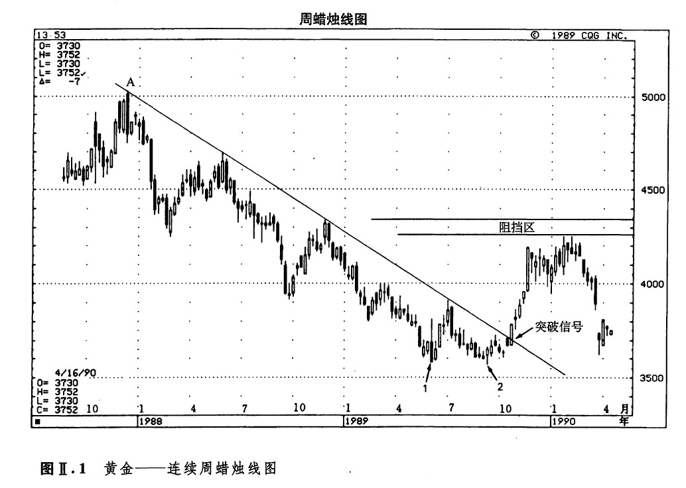
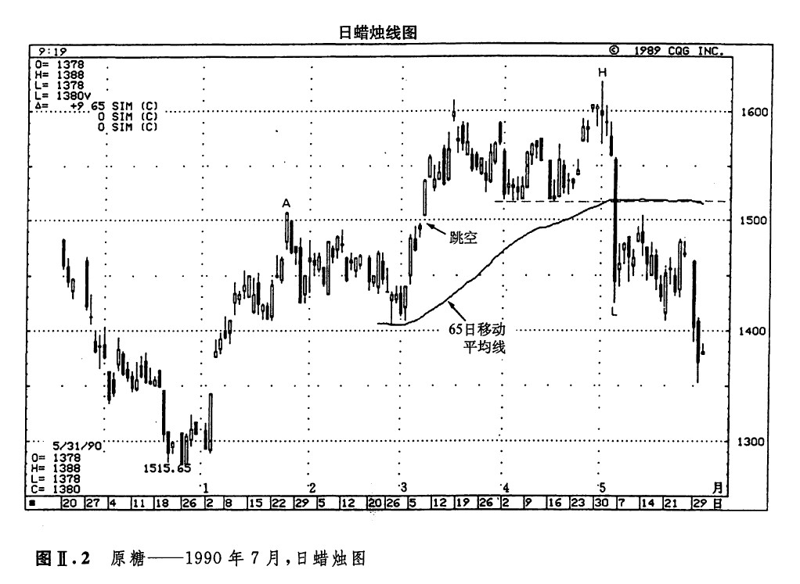

在这一部分，我们将通过对实例的剖析，说明当不同的技术指标相互验证、汇聚一堂的时候，能够帮助我们预测有可能形成的重要支撑水平或阻挡水平。在下面的实例中，我们采用的主要是西方技术分析方法。在往后的各个章节中，则全部谈到了蜡烛图。
如图Ⅱ.1所示，为黄金市场蜡烛线图。在1989年10月下旬，黄金市场向上突破了一条为期2年的下降趋势线，其收市价超过了380美元的水平。结合考虑该市场在1989年于357美元的水平建筑的绝妙的底部，这一突破就构成了一个价格即将上涨的信号。在1989年底黄金市场向上突破后，《金融新闻网》曾经采访了我对该市场技术分析上的看法。我对他们说，我们会看到黄金市场形成一轮上涨行情，但是这轮上涨行情将在425美元到433美元之间打住。1990年初，黄金市场在425美元的水平达到顶峰，然后恢复了先前的熊市。

当时黄金市场的交易价格在380美元左右，为什么我会选中425美元到433美元的区间作为目标阻挡水平呢？答案就在于，我实行了多技术方法共同参照原则。有四种相互独立的技术分析指标显示，主要阻挡水平位于425美元到433美元的区间中。下面，我们将在图Ⅱ.1中逐一地介绍这四项技术指标（在本实例中，我们不考虑蜡烛图形态）。
1.从1987年的最高点（点A点处）502美元的水平，到1989年的最低点（点1处和点2处）357美元，其中的50%价格回撒水平是430美元。
2.1989年的两个低点（点1和点2处）组成了一个双重底形态。根据这一双重底形态，我推算出市场向上的价格目标在425美元（在双重底形态反转过程中，上方的价格目标的推算方法是，先得出两个低点之间反转形态的高度，然后将这个高度加到这个中间高点上）。
3.距当时最近的市场高点形成于1988年，其价格水平为433美元。
4.我的同事，约翰·甘比诺，是一名艾略特波浪理论的应用者。据他分析，黄金市场正处在艾略特理论的第四浪阶段。根据这一点，黄金市场的向上反弹行情不应当穿越第一浪的低点。该低点在1988年初形成，处于425美元的水平。
上述技术分析工具本身互不相干，但是它们不约而同地显示，从425美元到433美元的价格区域为一个主要阻挡水平。由于黄金市场未能向上涨过425~433美元之间的阻挡区，就证明牛方缺乏足够的勇气（这句话是双关语，实际上前后两个方面完全是一回事）。不久，市场的主要下降趋势便毫不含糊地恢复了其主宰地位。
如果黄金市场向上突破了我所指出的阻挡区域的上限，即433美元的水平，将会出现怎样的情形呢？果真如此，我将不得不修改我对该市场的长期趋势看跌的判断。而这一点，正是技术分析之所以难能可贵的一个重要原因。在各种情况下，市场上总是存在某个标志性的价格水平，根据这一标准，我就能确认在什么条件下我的观点是错误的。在上述实例中，如果黄金市场收市于433美元的水平，我将纠正自己对该市场长期趋势看跌的成见。
市场通过其价格活动向我们传递信息。如果市场的这轮行情告诉我，我的观点是错误的，那么，我就调整自己，适应市场。我还不至于自以为是，以为市场竟然会适应我个人。市场永远不会错，这一点是不容置疑的。
如图Ⅱ.2所示为原糖市场。5月初，当市场崩溃以后，我估计原糖市场可能会从0.14美元的水平开始一段短暂的向上反弹（一方面，在周蜡线图上，该水平正处在一个为期一年的牛市趋势管道的底部；另一方面，在本图中，这里也是2月底、3月初的低点所处的水平）。不过，除非原糖市场能够向上推进到0.1515~0.1520美元的区域之上，否则，我相信该市场还是处在一个中期下降趋势之中。这次向上反弹行情的高点出现在5月14日，为0.1515美元。

那么，我是根据什么样的考虑得出0.1515~0.1520的阻挡区的呢？我研究了四个方面的技术指标，它们均指明在上述区域存在重要阻挡。具体说来，这四个方面是：
1.从3月初到整个4月，此处曾经是一个支撑水平，并且多次经受了市场的试探。我觉得一旦这个强大的支撑水平被向下突破，它就会演变为同样顽固的一个阻挡水平。
2.图示的65天移动平均线（我发现这种移动平均线在很多市场上都有效）当时正处在0.1515美元的水平（参见第十三章，那里将更深人地探讨移动平均线在蜡烛图中的用法）。
3.请看A点所示的市场于1月份形成的高点，以及B点所示的3月里形成的价格跳空，由此我们看到0.15美元水平在市场心目中的重要性。
4.从0.1627美元的高峰（点H所示），到0.144美元的低谷（点L所示），其间的菲波纳奇32%价格回撒水平是0.1514美元。在一轮抛售行情过后，它的32%的回撤水平有时构成了第一个阻挡水平。
市场永远不会错
我曾经讲授过一个讲座，内容不是关于蜡烛图技术的，题目是“通过技术分析形成纪律化交易风格的方法”。在这次讲座中，我讨论了严守纪律的交易方式的重要意义。为了简明扼要地表达这一思想，我做了一个拼字部戏，把有关文字的首字母组合成一个词，“DISCIPINE”（此处的意思为“纪律或者守则”——译者注）。在DISCPLNE一词中，我为每一个字母提出了一条交易守则。举例来说，我为字母N提出的守则是，“Never trade in the belief the market is wrong”（绝不可带着“市场错了”的成见进行交易）[2]。
我讲“市场永远不会错”这句话到底有什么用意呢？我的意思是，千万不要将自己的主观臆断强加于市场。举例来说，即便您坚定地判断原油市场即将上涨，也必须等到市场趋势果真向上出头的时候才能买进。假定原油市场本来正处于熊市状态。在这种情况下，如果您根据自己的预期“牛市即将形成”来买进，那么，您就是将自己的主观愿望和期待强加于市场了。您正在与当前的趋势为敌。其结局可能是灾难性的。或许最终看来，您的看涨的观点是正确的，但是这个时候很可能已经来得太迟了。
我们不妨打个比方，想像一下您正在一条单向行驶的街道上驱车前进。这时，您注意到，在这条单行道上，迎面开来一台压路机，它的方向当然是错误的。于是，您停下车，拿出一块标志牌（您总随身携带着这块标志牌），上面写着：“停车，方向错了！”把这块牌子举到压路机前面。您知道这台压路机走错了方向。但是，压路机的驾驶员也许没能及时地注意到您。等到压路机终于调过头来的时候，或许已经太晚了。这时候，您可能已经变为一块柏油路面了。
这就是个人相对于市场的真实处境.如果您与趋势对着干，那么，虽然后来的结果也许证明您的预见是正确的，但是到了那个时候，一切都可能太晚了。在期货市场上，由于追加保证金的要求，可能在您预期的市场变化到来之前，已经迫使您把敞口头寸止损了结了。甚至还可能出现更悲惨的结局；最终或许您的看法果然是正确的，但是到了那个时候，您已经破产了。
绝不可将自己的意愿强加于市场，一定要做一个追随趋势者，不要做一个预测趋势者。如果您怀着看涨的预期，那么就在上升趋势中入市日；如果您持有着跌的预期，那么就在下降趋势中入市，我曾经翻译过一本日文书，在这本书中，几乎用诗一样的语言表述了上述思想。“如果在入市之前茫然不知市场的特征，就譬如对武事一窃不通的文人大谈用兵之道，纯属纸上谈兵。当他们面临着大规模的牛市或熊市行情时，必定会丢城失地。他们以为安全妥当的，其实危险元穷……等待恰当的时机入市，是至关紧要的，也正是雄才大略的表现。”
注
[1]斯克拉罗·阿瑟《期货图表职业分析手段》，芝加哥：商品研究局，1990。
[2]如果读者朋友对我的交易守则首字母组合“DISCIPLINE”有兴趣，下面就是其中各项的内容：Don’t forget old support and resistance levels——不要忘记过去的支撑水平和阻挡水平（过去的支撑水平可能演化为新的阻挡水平，反之亦然。
If···then system——如果……那么系统（如果市场的演变符合预期，那么继续实施预定的交易方案——否则，平仓出市）。
Stops——始终是采用止损指令作为保护措施。
Consider options——将期权市场纳入考虑的范围。
Intra-day technicals are important——日内图表的技术因素也是重要的方面。
Pace trades to market environment——调整交易的节奏，以适应不同的市场环攘（根据市场的具体条件，改变自己的交易风格）。
Locals——自营交易商，绝不可以忽视自营交易商的动向。
Indicators——技术分析信号，越多越好（多技术方法共同参照原则）。
Never trade in the belief the market is wrong——绝不可以抱着市场错了的成见做交易。
Examine the arket’s reactien to the fundamentals——注意研究市场对基本商信息的反应。
[3] 《酒田战法：风林火山》，日本东京：日本商工新闻社，1969年，第46页（本部分是理查德·索尔伯格翻译的）。
下一篇：第十章 蜡烛图信号的汇聚
上一篇：第二部分 多技术方法共同参照原则
copyright @ 2018 制作：汉钛电线，Hingtak Wire & Cable LLC